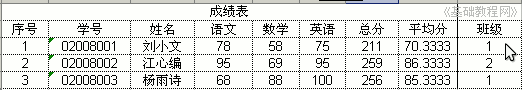
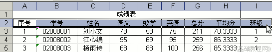
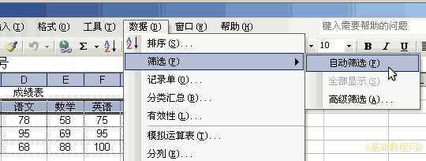
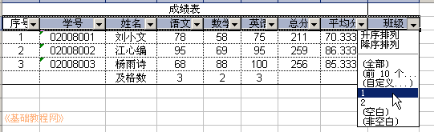
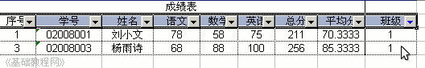
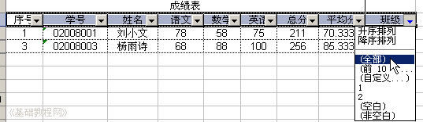
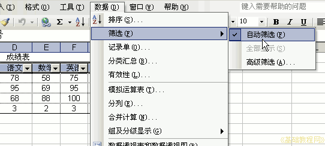

Excel 基础入门教程
筛选 返回
有时候需要将几个班中某一个班挑选出来，下面我们来看一个练习；
1、启动Excel
1）点击“开始－所有程序－Microsoft－Microsoft Office Excel 2003"；
2）出现一个满是格子的空白窗口，这就是一张电子表格了，第一个格子看着边框要粗一些，处于选中状态；

2、筛选
1）打开之前的成绩表，在最后一列加上班级，以“筛选”为文件名，另存文件到自己的文件夹；
2）在“班级”下边的单元格中，分别输入：1、2、1，也就是两个同学是1班另一个是2班的；

3）用拖选的方法，选中标题，也就是从“序号”拖到“班级”；

4）点菜单“数据－筛选－自动筛选”，在各个列标题上出现一个下拉按钮；

5）点击“班级”旁边的下拉按钮，选择“1”，也就是把1班的同学挑选出来；

6）这时表格中只显示1班的了，其他的项被隐藏起来；

7）要重新显示其他班，再点“班级”旁边的下拉按钮，选择“全部”；

8）要关闭自动筛选，再点菜单“数据－筛选－自动筛选”，这时各个按钮就消失了；

保存一下文件
本节学习了Excel中筛选的方法，如果你成功地完成了练习，请继续学习下一课内容；本教程由86团学校TeliuTe制作|著作权所有
基础教程网：http://teliute.org
美丽的校园……
转载和引用本站内容，请保留版权信息和本站链接。